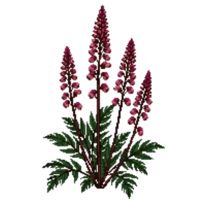

Astilbe 'Fanal'
Astilbe x arendsii 'Fanal'

Astilbe 'Fanal' is a perennial for mid-border, suited to shade and partial shade and clay, loam or acid soil, flowering Jun, Jul, Aug.
| Type | Perennial |
|---|---|
| Mature height | 60 cm |
| Spread | 60 cm |
| Aspect | shade and partial shade |
| Foliage | Deciduous |
| Hardiness | USDA 4a-8b, RHS H7 |
| Pollinator-friendly | No |
| Pet-safe | Yes |
Where to use it in a border
At around 60 cm, it sits best through the middle of a border, between taller structure behind and edging in front. Give it about 60 cm of room to spread. It is hardy across USDA zones 4a to 8b and rated H7 by the RHS, so check it suits your area before planting.
It appears in our lists of shade, clay soil, acid soil, pet-safe plants.
Border Builder uses Astilbe 'Fanal''s height, spread, soil, bloom months and companions to place it in a full border plan for your own conditions, on iPhone and iPad.
Flowering through the year
Worth knowing
- It tolerates acid soil but dislikes shallow chalk.
- It tolerates a shaded, north-facing spot.
Good companions
Plants that share its conditions and style, chosen to complement its place in the border:
- Azaleafor height behind it
- Bigleaf Hydrangea 'Endless Summer'for height behind it
- Camelliafor height behind it
- Camellia 'Professor Sargent'for height behind it
- Camellia 'Yuletide'for height behind it
- Hydrangea 'Endless Summer'for height behind it